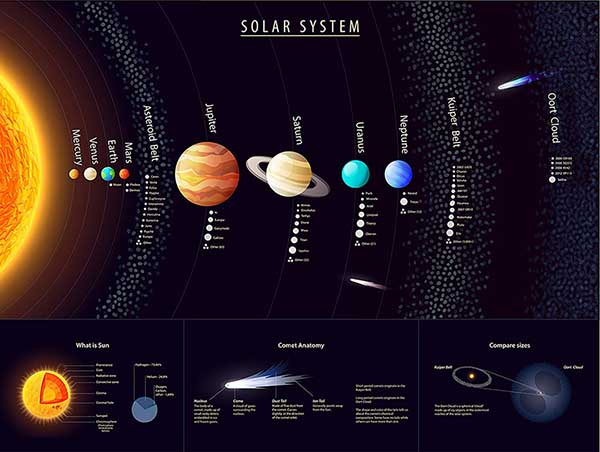

| News | Contact us | Galleri |
|---|
Planets
|
The Solar System[a] is the gravitationally bound system comprising the Sun and the objects that orbit it, either directly or indirectly.[b] Of those objects that orbit the Sun directly, the largest eight are the planets,[c] with the remainder being smaller objects, such as dwarf planets and small Solar System bodies. Of the objects that orbit the Sun indirectly, the moons, two are larger than the smallest planet, Mercury.[d] The Solar System formed 4.6 billion years ago from the gravitational collapse of a giant interstellar molecular cloud. The vast majority of the system's mass is in the Sun, with the majority of the remaining mass contained in Jupiter. The four smaller inner planets, Mercury, Venus, Earth and Mars, are terrestrial planets, being primarily composed of rock and metal. The four outer planets are giant planets, being substantially more massive than the terrestrials. The two largest, Jupiter and Saturn, are gas giants, being composed mainly of hydrogen and helium; the two outermost planets, Uranus and Neptune, are ice giants, being composed mostly of substances with relatively high melting points compared with hydrogen and helium, called volatiles, such as water, ammonia and methane. All eight planets have almost circular orbits that lie within a nearly flat disc called the ecliptic. The Solar System also contains smaller objects.[e] The asteroid belt, which lies between the orbits of Mars and Jupiter, mostly contains objects composed, like the terrestrial planets, of rock and metal. Beyond Neptune's orbit lie the Kuiper belt and scattered disc, which are populations of trans-Neptunian objects composed mostly of ices, and beyond them a newly discovered population of sednoids. Within these populations are several dozen to possibly tens of thousands of objects large enough that they have been rounded by their own gravity.[10] Such objects are categorized as dwarf planets. Identified dwarf planets include the asteroid Ceres and the trans-Neptunian objects Pluto and Eris.[e] In addition to these two regions, various other small-body populations, including comets, centaurs and interplanetary dust clouds, freely travel between regions. Six of the planets, at least four of the dwarf planets, and many of the smaller bodies are orbited by natural satellites,[f] usually termed "moons" after the Moon. Each of the outer planets is encircled by planetary rings of dust and other small objects. |
 |
|---|